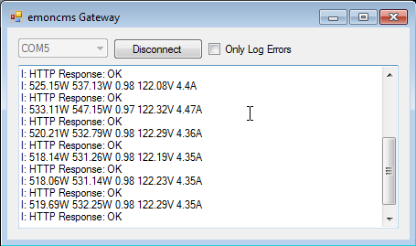

I just built up a version of the basic non invasive energy monitor v3.0 on a breadboard. Has anybody written a windows app to upload the serial data to emon cms? I.e. some sort of a gateway to the internet in case you don't have an aurduino ethernet board.
Thanks. Kevin.
Re: Serial gateway to emoncms
Hi Kevin,
Not that I know of, such an app would be useful. It just has to call
replacing 252.4 and 15.4 with the values you would like to send. Please let us know if you make any progress.
Re: Serial gateway to emoncms
I had a similar application for Google PowerMeter so I just I just modified it to work with the non invasive 3.0 example and emoncms. Simple, but it works well. I've uploaded the code to github. Any feedback is appreciated.
https://github.com/kjlowe/emoncms_gateway
I would make comment about it here, but I can't find the comment box.

Re: Serial gateway to emoncms
Nice! I'm sure this will be useful to many people. Could you make a compiled version available? We can host the download on this site. It would also be great to have a linux version that could run on low power embedded devices like the beagle board/bone and Rasbperry Pi, see this thread: http://openenergymonitor.org/emon/node/488
I have created a page under emoncms, do you think you could flesh it out with some details about the program: http://openenergymonitor.org/emon/modules/emoncms/serialgateway. Obviously give full credit to yourself.
Thanks a lot,
Re: Serial gateway to emoncms
Will do Glyn.. I just need to make an external configuration file.
I built the program in C# though and I've never developed anything that works cross platform. If I take that route, what language/dev environment would you suggest I use?
Re: Serial gateway to emoncms
Fantastic, Trystan mainly uses java script and we both run Linux Ubuntu. But the choice is yours.
Re: Serial gateway to emoncms
If you turn it into a console application, you can run the .net stuff under Mono on Linux, works a treat even on small memory foot print devices.
Re: Serial gateway to emoncms
I have just finnished a Processing application that receives serial data from an Arduino and post it to Emoncms. This code runs on Windows, Mac and Linux. If anyone is interested i can share it.
For Arduino programmers Processing is a great way to write cross platform apps since it is basically the same language.
I have implemented my own protocol for sending data between aruduinos and to the PC, but that should not be to difficult ro change if you want to use it.
/Magnus
Re: Serial gateway to emoncms
Yes, sounds interesting. Please post the code.
Re: Serial gateway to emoncms
I think i was to optimistic. The application will never run for more than 15-20 hours before shutting down. I replaced it with a Delphi app today which will hopefully be more stable. Downside is that it will only run on a pc.
/Magnus